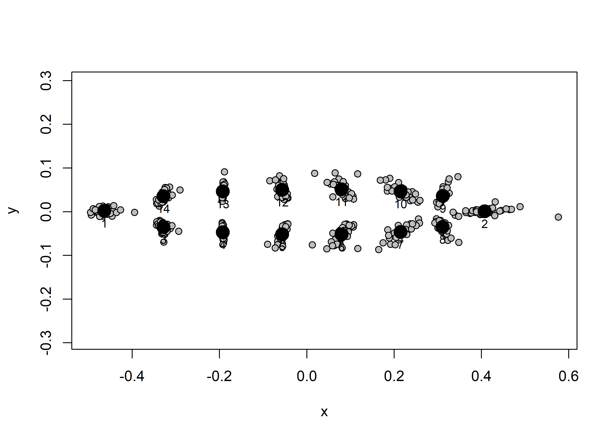
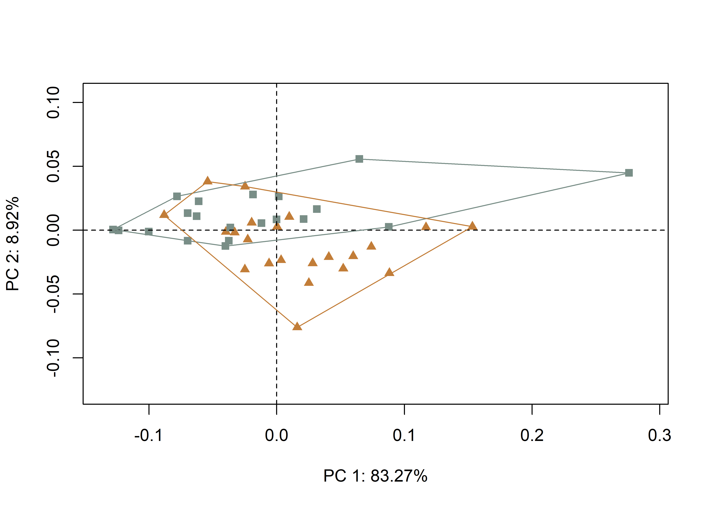
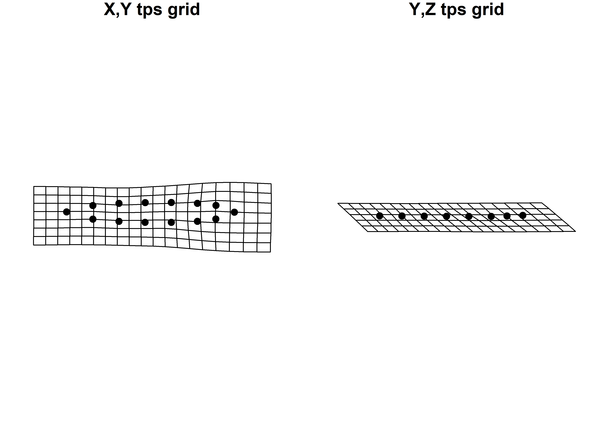
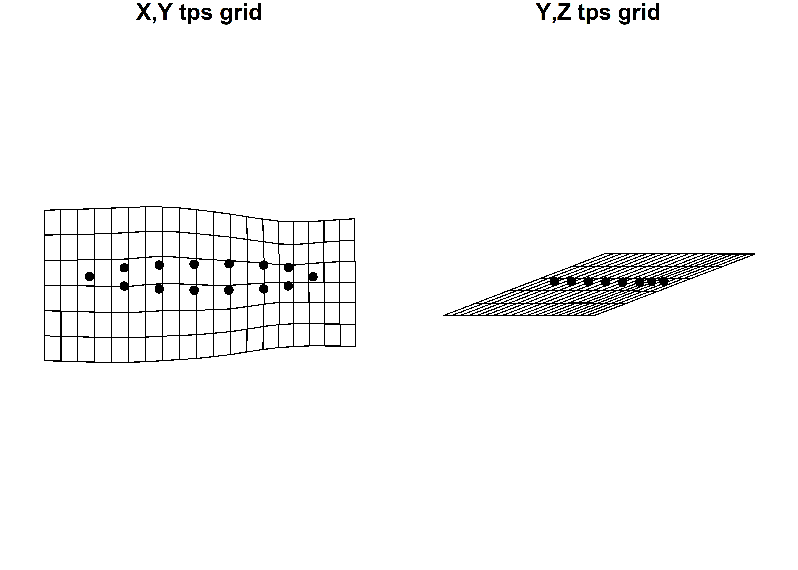
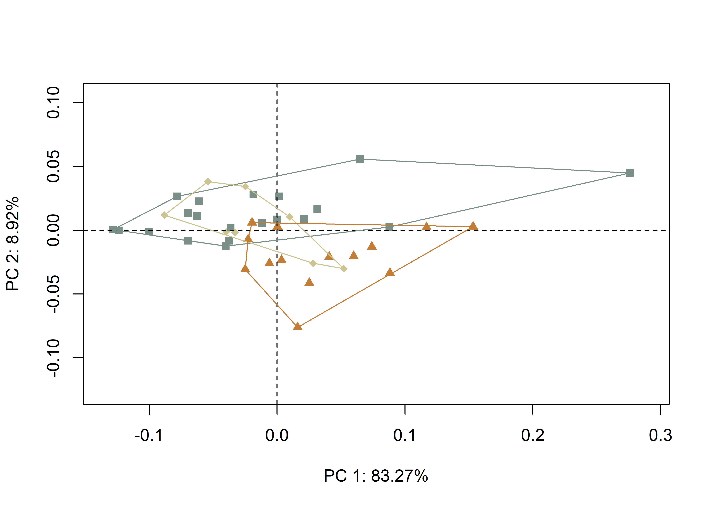
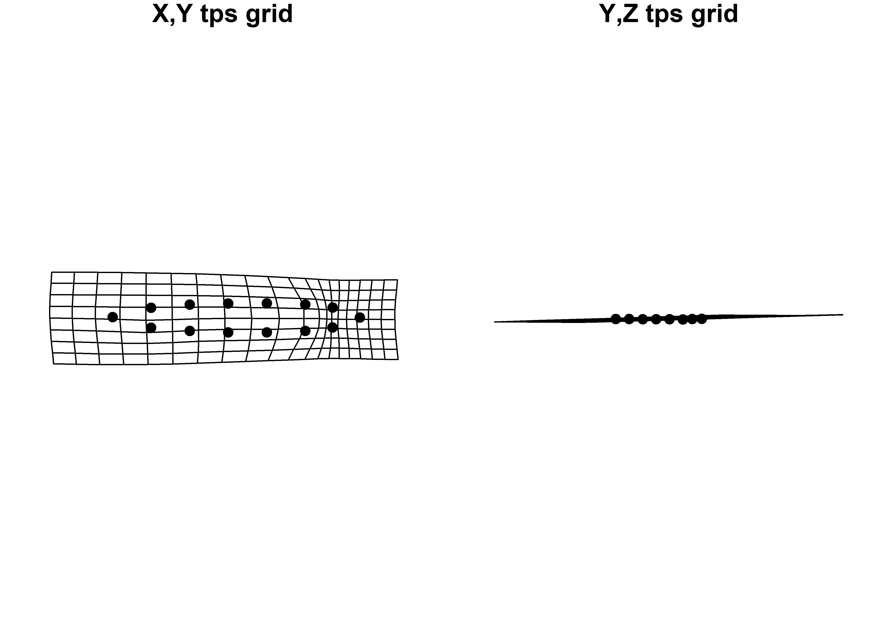
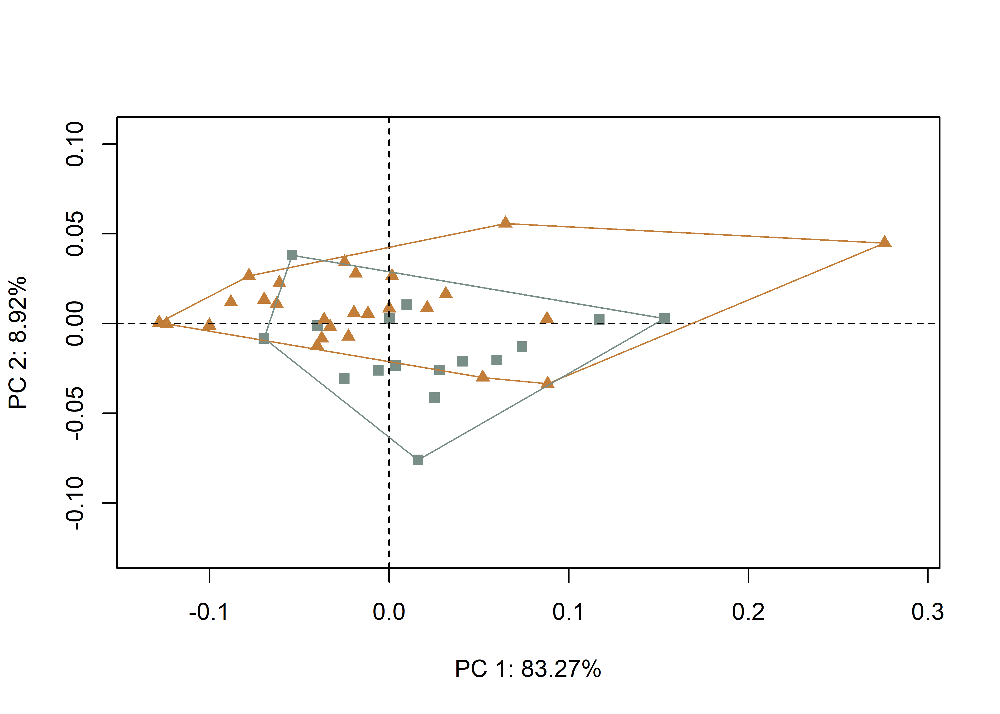
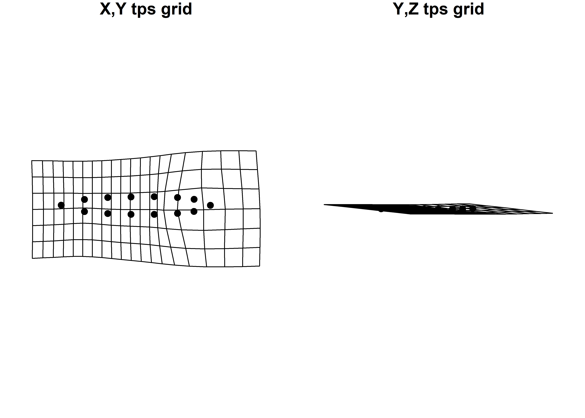
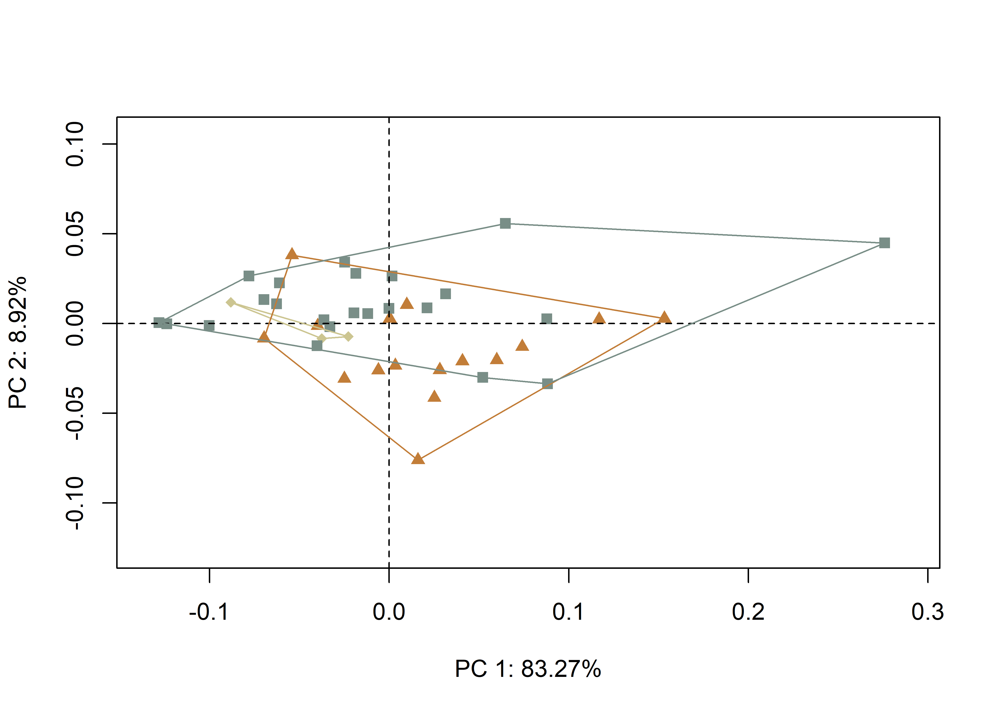

Chapter 7 Cross-section: midline
The dynamic midline cross-section used in this analysis is comprised of two discrete geometries (blade and base). The cross-section was generated using two planes; one that bisects the projectile between LMs 04 and 05 to the tip (LM 01), and the other between LM 06 at the base to the same midpoint between LMs 04 and 05. Thus, the midline does not run straight from base to tip; rather, it captures the unique geometry of each component, yielding increased precision in the analysis of dynamic midline cross-sectional morphology.
7.1 Load packages + data
# load packages
# devtools::install_github("geomorphR/geomorph", ref = "Stable", build_vignettes = TRUE)
library(here)
library(geomorph)
library(tidyverse)
library(wesanderson)
# read GM data
source('readmulti.csv.R')
# read .csv files
setwd("./data")
filelist <- list.files(pattern = ".csv")
coords <- readmulti.csv(filelist)
setwd("../")
# read qualitative data
qdata <- read.csv("qdata.csv", header = TRUE, row.names = 1)
qdata <- qdata[match(dimnames(coords)[[3]],rownames(qdata)),]
# print qdata
#knitr::kable(qdata, align = "cccc", caption = "Attributes included in qdata.")7.2 Generalized Procrustes Analysis
Landmark data were aligned to a global coordinate system (Kendall 1981, 1984; Slice 2001), achieved through generalized Procrustes superimposition (Rohlf and Slice 1990) performed in R 4.0.2 (R Core Development Team, 2020) using the geomorph library v. 3.3.1 (Adams et al. 2017; Adams and Otárola-Castillo 2013). Procrustes superimposition translates, scales, and rotates the coordinate data to allow for comparisons among objects (Gower 1975; Rohlf and Slice 1990). The geomorph package uses a partial Procrustes superimposition that projects the aligned specimens into tangent space subsequent to alignment in preparation for the use of multivariate methods that assume linear space (Rohlf 1999; Slice 2001).
#select landmarks from coords for midline cross-section
a <- c(1,6,19:30)
# new coords midline
mid.cross <- coords[a,,]
# gpa
Y.gpa <- gpagen(mid.cross,
PrinAxes = TRUE,
ProcD = TRUE,
Proj = TRUE,
print.progress = FALSE)
# output + consensus configuration coords
#Y.gpa
# plot gpa results in 3D
#plot(Y.gpa)
# plot superimposed mshape + samples in 2D
gpa.shape <- Y.gpa$coords[,1:2,]
plotAllSpecimens(gpa.shape, mean = TRUE, label = TRUE)
# geomorph data frame
gdf <- geomorph.data.frame(shape = Y.gpa$coords,
size = Y.gpa$Csize,
heart = qdata$heart.out,
hreg = qdata$heart.reg,
bev.1 = qdata$bev,
bev.2 = qdata$bev.type)# render 3d gpa plot
#plot(Y.gpa)
# gpa plot
# knitr::include_graphics('images/gpa3d.png')7.2.1 Boxplot attributes
# add centroid size to qdata
qdata$csz <- Y.gpa$Csize
# print updated qdata with centroid size
knitr::kable(qdata,
align = "ccccc",
caption = "Modified attributes included in qdata.")| heart.out | heart.reg | bev | bev.type | csz | |
|---|---|---|---|---|---|
| 11AI225 | H | H | y | unifacial.bimarginal | 61.11487 |
| 11HE445 | N | P | n | no.bevel | 74.76206 |
| HK49_1462 | N | I | n | no.bevel | 62.32906 |
| HK49_2 | N | I | n | no.bevel | 43.89554 |
| HK49_3022 | N | I | n | no.bevel | 58.82286 |
| HK49_3823 | N | I | n | no.bevel | 68.88024 |
| HK49_4 | N | I | n | no.bevel | 69.37156 |
| HK49_5928 | N | I | y | alternate | 76.12177 |
| HK49_5961 | N | I | n | no.bevel | 59.22129 |
| HK49_7 | N | I | y | unifacial.bimarginal | 58.72811 |
| KeilMangold10 | H | H | y | alternate | 79.94603 |
| KeilMangold13 | H | H | y | alternate | 90.16432 |
| KeilMangold14 | H | H | y | alternate | 95.03489 |
| KeilMangold17 | H | H | y | alternate | 63.74870 |
| KeilMangold24 | H | H | y | alternate | 66.53311 |
| KeilMangold3 | H | H | y | alternate | 78.06352 |
| KeilMangold42 | H | H | y | alternate | 70.17120 |
| KeilMangold64 | H | H | y | alternate | 89.51775 |
| KeilMangold8 | H | H | y | alternate | 63.16566 |
| KeilMangold90 | H | H | y | alternate | 70.79786 |
| Kinzer46 | N | P | n | no.bevel | 49.45532 |
| Kinzer49 | N | P | n | no.bevel | 50.00941 |
| Kinzer50 | N | P | y | alternate | 50.92278 |
| Leprechaun11MS1983FSI800-5 | H | H | y | alternate | 123.57821 |
| MA1699p1 | H | H | y | alternate | 100.78437 |
| MA1699p3 | H | H | n | no.bevel | 81.08615 |
| McL4_158 | N | I | y | alternate | 41.97174 |
| McL4_614 | N | I | n | no.bevel | 58.00930 |
| McL7_101 | N | I | n | no.bevel | 48.24119 |
| McL7_168 | N | I | n | no.bevel | 60.62005 |
| Nochta11MS128BFSI267-1 | H | H | y | alternate | 64.09966 |
| Nochta11MS128bFSIPP1001 | H | H | y | alternate | 103.68372 |
| Nochta11MS128BFSIPP2495 | H | H | y | alternate | 49.42412 |
| Nochta11MS128BFSIPP3305 | H | H | y | alternate | 34.27501 |
| Nochta11MS12BFIS800-168 | H | H | y | alternate | 67.43576 |
| OH1_176 | N | I | n | no.bevel | 47.59644 |
| ReedVoss2 | H | H | y | alternate | 73.67803 |
| TR10_4 | N | I | n | no.bevel | 36.91107 |
| Welton1 | N | P | n | no.bevel | 141.06458 |
| Welton2 | N | P | y | alternate | 82.52663 |
| Welton4 | N | P | y | alternate | 104.63232 |
| Welton5 | N | P | y | unifacial.bimarginal | 121.00806 |
# attributes for boxplots
csz <- qdata$csz # centroid size
heart <- qdata$heart.out # heartland in/out
hreg <- qdata$heart.reg # heartland region
bev.1 <- qdata$bev # beveled yes/no
bev.2 <- qdata$bev.type # type of beveling7.3 Principal Components Analysis
Principal components analysis (Jolliffe 2002) was used to visualise shape variation among the bifaces. The shape changes described by each principal axis are commonly visualized using thin-plate spline warping of a reference 3D mesh (Klingenberg 2013; Sherratt et al. 2014).
# principal components analysis
pca<-gm.prcomp(Y.gpa$coords)
summary(pca)##
## Ordination type: Principal Component Analysis
## Centering by OLS mean
## Orthogonal projection of OLS residuals
## Number of observations: 42
## Number of vectors 35
##
## Importance of Components:
## Comp1 Comp2 Comp3 Comp4 Comp5 Comp6
## Eigenvalues 0.005739287 0.0006146538 0.0001351017 0.000109932 8.306713e-05 5.941208e-05
## Proportion of Variance 0.832734908 0.0891824480 0.0196024146 0.015950452 1.205253e-02 8.620324e-03
## Cumulative Proportion 0.832734908 0.9219173559 0.9415197706 0.957470223 9.695227e-01 9.781431e-01
## Comp7 Comp8 Comp9 Comp10 Comp11 Comp12
## Eigenvalues 4.057712e-05 2.584745e-05 2.274147e-05 1.868844e-05 1.234844e-05 1.039226e-05
## Proportion of Variance 5.887488e-03 3.750304e-03 3.299646e-03 2.711576e-03 1.791682e-03 1.507853e-03
## Cumulative Proportion 9.840306e-01 9.877809e-01 9.910805e-01 9.937921e-01 9.955838e-01 9.970916e-01
## Comp13 Comp14 Comp15 Comp16 Comp17 Comp18
## Eigenvalues 7.310378e-06 5.041852e-06 3.706638e-06 2.375761e-06 1.185369e-06 2.872985e-07
## Proportion of Variance 1.060690e-03 7.315414e-04 5.378102e-04 3.447082e-04 1.719897e-04 4.168523e-05
## Cumulative Proportion 9.981523e-01 9.988839e-01 9.994217e-01 9.997664e-01 9.999384e-01 9.999800e-01
## Comp19 Comp20 Comp21 Comp22 Comp23 Comp24
## Eigenvalues 1.014717e-07 1.924350e-08 8.084482e-09 3.585943e-09 1.965529e-09 1.205010e-09
## Proportion of Variance 1.472292e-05 2.792112e-06 1.173008e-06 5.202980e-07 2.851860e-07 1.748395e-07
## Cumulative Proportion 9.999948e-01 9.999976e-01 9.999987e-01 9.999993e-01 9.999995e-01 9.999997e-01
## Comp25 Comp26 Comp27 Comp28 Comp29 Comp30
## Eigenvalues 6.284072e-10 4.409175e-10 2.919322e-10 2.065272e-10 1.315429e-10 1.004519e-10
## Proportion of Variance 9.117798e-08 6.397440e-08 4.235755e-08 2.996582e-08 1.908606e-08 1.457494e-08
## Cumulative Proportion 9.999998e-01 9.999999e-01 9.999999e-01 9.999999e-01 1.000000e+00 1.000000e+00
## Comp31 Comp32 Comp33 Comp34 Comp35
## Eigenvalues 7.927909e-11 4.598534e-11 2.327457e-11 1.597945e-11 4.798177e-12
## Proportion of Variance 1.150290e-08 6.672187e-09 3.376996e-09 2.318519e-09 6.961858e-10
## Cumulative Proportion 1.000000e+00 1.000000e+00 1.000000e+00 1.000000e+00 1.000000e+007.4 Define models
7.4.1 Hypothesis 1
## Define models
# size as a function of heart
fit.size.heart <- procD.lm(size ~ heart,
data = gdf,
print.progress = FALSE,
iter = 9999)
# shape as a function of heart
fit.shape.heart <- procD.lm(shape ~ heart,
data = gdf,
print.progress = FALSE,
iter = 9999)7.4.2 Hypothesis 2
## Define models
# size as a function of hreg
fit.size.hreg <- procD.lm(size ~ hreg,
data = gdf,
print.progress = FALSE,
iter = 9999)
# shape as a function of hreg
fit.shape.hreg <- procD.lm(shape ~ hreg,
data = gdf,
print.progress = FALSE,
iter = 9999)7.4.3 Hypothesis 3
## Define models
# size as a function of bev.1
fit.size.bev.1 <- procD.lm(size ~ bev.1,
data = gdf,
print.progress = FALSE,
iter = 9999)
# shape as a function of bev.1
fit.shape.bev.1 <- procD.lm(shape ~ bev.1,
data = gdf,
print.progress = FALSE,
iter = 9999)7.4.4 Hypothesis 4
## Define models
# size as a function of bev.2
fit.size.bev.2 <- procD.lm(size ~ bev.2,
data = gdf,
print.progress = FALSE,
iter = 9999)
# shape as a function of bev.2
fit.shape.bev.2 <- procD.lm(shape ~ bev.2,
data = gdf,
print.progress = FALSE,
iter = 9999)7.5 Test Hypothesis 1 (Geo X1)
Hypothesis 1 assesses whether there is a difference in morphology for Dalton points found in and out of the heartland.
A residual randomization permutation procedure (RRPP; n = 10,000 permutations) was used for all Procrustes ANOVAs (Adams and Collyer 2015; Michael L. Collyer and Adams 2018), which has higher statistical power and a greater ability to identify patterns in the data should they be present (Anderson and Ter Braak 2003). To assess whether shape differs by group (region), Procrustes ANOVAs (Goodall 1991) were also run that enlist effect-sizes (zscores) computed as standard deviates of the generated sampling distributions (M. L. Collyer, Sekora, and Adams 2015).
knitr::include_graphics('images/dalton-vizhypothesis1.jpg')
(#fig:lm3d3.a1.h1.midcross)Hypothesis 1 considers whether Dalton points discovered in (left) and out (right) of the Heartland differ in morphology.
7.5.1 Boxplot (H1)
# boxplot of Dalton point centroid size by in/out heartland
csz.hrt <- ggplot(qdata, aes(x = heart, y = csz, color = heart)) +
geom_boxplot() +
geom_dotplot(binaxis = 'y', stackdir = 'center', dotsize = 0.3) +
scale_colour_manual(values = wes_palette("Moonrise2")) +
theme(legend.position = "none") +
labs(x = 'In Heartland?', y = 'Centroid Size - Mid Cross')
# render plot
csz.hrt## Bin width defaults to 1/30 of the range of the data. Pick better value with `binwidth`.(#fig:box1.midcross)Boxplot of centroid size by Heartland (in/out).
7.5.2 Principal Components Analysis (H1)
# set plot parameters to plot by heartland in (H) and out (N)
pch.gps.heart <- c(15,17)[as.factor(heart)]
col.gps.heart <- wes_palette("Moonrise2")[as.factor(heart)]
col.hull <- c("#798E87","#C27D38")
# plot pca by heartland in (H) and out (N)
pc.plot1 <- plot(pca,
asp = 1,
pch = pch.gps.heart,
col = col.gps.heart)
shapeHulls(pc.plot1,
groups = heart,
group.cols = col.hull)
7.5.3 Minima/maxima of PC1/2 with warp grids
# plot x/y maxima/minima
## x - minima
mean.shape <- mshape(Y.gpa$coords)
plotRefToTarget(pca$shapes$shapes.comp1$min,
mean.shape)
## x - maxima
plotRefToTarget(pca$shapes$shapes.comp1$max,
mean.shape)
## y - minima
plotRefToTarget(pca$shapes$shapes.comp2$min,
mean.shape)
## y - maxima
plotRefToTarget(pca$shapes$shapes.comp2$max,
mean.shape)
7.5.4 ANOVA (H1)
# ANOVA: do dalton projectile point sizes differ by heart?
anova(fit.size.heart)##
## Analysis of Variance, using Residual Randomization
## Permutation procedure: Randomization of null model residuals
## Number of permutations: 10000
## Estimation method: Ordinary Least Squares
## Sums of Squares and Cross-products: Type I
## Effect sizes (Z) based on F distributions
##
## Df SS MS Rsq F Z Pr(>F)
## heart 1 989.7 989.70 0.04308 1.8007 0.90451 0.1956
## Residuals 40 21985.2 549.63 0.95692
## Total 41 22974.9
##
## Call: procD.lm(f1 = size ~ heart, iter = 9999, data = gdf, print.progress = FALSE)# ANOVA: do dalton projectile point shapes differ by heart?
anova(fit.shape.heart)##
## Analysis of Variance, using Residual Randomization
## Permutation procedure: Randomization of null model residuals
## Number of permutations: 10000
## Estimation method: Ordinary Least Squares
## Sums of Squares and Cross-products: Type I
## Effect sizes (Z) based on F distributions
##
## Df SS MS Rsq F Z Pr(>F)
## heart 1 0.017992 0.0179916 0.06367 2.72 1.3978 0.0879 .
## Residuals 40 0.264584 0.0066146 0.93633
## Total 41 0.282576
## ---
## Signif. codes: 0 '***' 0.001 '**' 0.01 '*' 0.05 '.' 0.1 ' ' 1
##
## Call: procD.lm(f1 = shape ~ heart, iter = 9999, data = gdf, print.progress = FALSE)7.5.5 Morphological disparity (H1)
# morphological disparity: does one group display greater
# shape variation among individuals relative to the other group?
morphol.disparity(shape ~ heart,
groups = qdata$heart.out,
data = gdf,
print.progress = FALSE,
iter = 9999)##
## Call:
## morphol.disparity(f1 = shape ~ heart, groups = qdata$heart.out,
## iter = 9999, data = gdf, print.progress = FALSE)
##
##
##
## Randomized Residual Permutation Procedure Used
## 10000 Permutations
##
## Procrustes variances for defined groups
## H N
## 0.008391791 0.004397654
##
##
## Pairwise absolute differences between variances
## H N
## H 0.000000000 0.003994137
## N 0.003994137 0.000000000
##
##
## P-Values
## H N
## H 1.0000 0.5045
## N 0.5045 1.00007.5.6 Mean Shapes (H1)
# subset landmark coordinates to produce mean shapes for hypothesis 1
new.coords<-coords.subset(A = Y.gpa$coords,
group = qdata$heart.out)
names(new.coords)## [1] "H" "N"# group shape means
mean <- lapply(new.coords, mshape)
# plot mean shapes
plot(mean$H)
plot(mean$N)
# comparison plots
plotRefToTarget(mean$H,
mean$N,
method="vector",
mag=2)
##knitr::include_graphics('images/mshape.h1.jpg')7.6 Test Hypothesis 2 (Geo X1)
Hypothesis 2 assesses whether there is a difference in morphology for Dalton points found in the heartland, the interior, and the northern periphery.
A residual randomization permutation procedure (RRPP; n = 10,000 permutations) was used for all Procrustes ANOVAs (Adams and Collyer 2015; Michael L. Collyer and Adams 2018), which has higher statistical power and a greater ability to identify patterns in the data should they be present (Anderson and Ter Braak 2003). To assess whether shape differs by group (region), Procrustes ANOVAs (Goodall 1991) were also run that enlist effect-sizes (zscores) computed as standard deviates of the generated sampling distributions (M. L. Collyer, Sekora, and Adams 2015).
knitr::include_graphics('images/dalton-vizhypothesis2.jpg')
(#fig:lm3d3.a1.h2.midcross)Hypothesis 2 considers whether Dalton points discovered in the heartland (left), interior (center), and northern periphery (right) differ in morphology.
7.6.1 Boxplot (H2)
# boxplot of Dalton point centroid size by heartland + regions
csz.hreg <- ggplot(qdata, aes(x = hreg, y = csz, color = hreg)) +
geom_boxplot() +
geom_dotplot(binaxis = 'y', stackdir = 'center', dotsize = 0.3) +
scale_colour_manual(values = wes_palette("Moonrise2")) +
theme(legend.position = "none") +
labs(x = 'Heartland Region', y = 'Centroid Size - Mid Cross')
# render plot
csz.hreg## Bin width defaults to 1/30 of the range of the data. Pick better value with `binwidth`.(#fig:box2.midcross)Boxplot of centroid size by Heartland region.
7.6.2 Principal Components Analysis (H2)
# set plot parameters to plot by heartland + regions
pch.gps.hreg <- c(15,17,18)[as.factor(hreg)]
col.gps.hreg <- wes_palette("Moonrise2")[as.factor(hreg)]
col.hull.2 <- c("#798E87","#CCC591","#C27D38")
# plot pca by heartland + regions
pc.plot2 <- plot(pca,
asp = 1,
pch = pch.gps.hreg,
col = col.gps.hreg)
shapeHulls(pc.plot2,
groups = hreg,
group.cols = col.hull.2)
7.6.3 Minima/maxima of PC1/2 with warp grids
# plot x/y maxima/minima
## x - minima
mean.shape <- mshape(Y.gpa$coords)
plotRefToTarget(pca$shapes$shapes.comp1$min,
mean.shape)
## x - maxima
plotRefToTarget(pca$shapes$shapes.comp1$max,
mean.shape)
## y - minima
plotRefToTarget(pca$shapes$shapes.comp2$min,
mean.shape)
## y - maxima
plotRefToTarget(pca$shapes$shapes.comp2$max,
mean.shape)### ANOVA (H2)
# ANOVA: does dalton projectile point size differ by hreg?
anova(fit.size.hreg)##
## Analysis of Variance, using Residual Randomization
## Permutation procedure: Randomization of null model residuals
## Number of permutations: 10000
## Estimation method: Ordinary Least Squares
## Sums of Squares and Cross-products: Type I
## Effect sizes (Z) based on F distributions
##
## Df SS MS Rsq F Z Pr(>F)
## hreg 2 4929.1 2464.57 0.21455 5.3264 2.3099 0.0096 **
## Residuals 39 18045.7 462.71 0.78545
## Total 41 22974.9
## ---
## Signif. codes: 0 '***' 0.001 '**' 0.01 '*' 0.05 '.' 0.1 ' ' 1
##
## Call: procD.lm(f1 = size ~ hreg, iter = 9999, data = gdf, print.progress = FALSE)# pairwise comparison of LS means = which differ?
sz.hreg <- pairwise(fit.size.hreg,
groups = qdata$heart.reg)
summary(sz.hreg,
confidence = 0.95,
test.type = "dist")##
## Pairwise comparisons
##
## Groups: H I P
##
## RRPP: 10000 permutations
##
## LS means:
## Vectors hidden (use show.vectors = TRUE to view)
##
## Pairwise distances between means, plus statistics
## d UCL (95%) Z Pr > d
## H:I 19.835133 16.15491 1.9986628 0.0130
## H:P 7.982499 19.25480 0.2248049 0.4313
## I:P 27.817632 20.30095 2.2051713 0.0071# ANOVA: does dalton projectile point shape differ by hreg?
anova(fit.shape.hreg)##
## Analysis of Variance, using Residual Randomization
## Permutation procedure: Randomization of null model residuals
## Number of permutations: 10000
## Estimation method: Ordinary Least Squares
## Sums of Squares and Cross-products: Type I
## Effect sizes (Z) based on F distributions
##
## Df SS MS Rsq F Z Pr(>F)
## hreg 2 0.036686 0.0183430 0.12983 2.9093 1.6962 0.0422 *
## Residuals 39 0.245890 0.0063049 0.87017
## Total 41 0.282576
## ---
## Signif. codes: 0 '***' 0.001 '**' 0.01 '*' 0.05 '.' 0.1 ' ' 1
##
## Call: procD.lm(f1 = shape ~ hreg, iter = 9999, data = gdf, print.progress = FALSE)# pairwise comparison of LS means = which differ?
sh.hreg <- pairwise(fit.shape.hreg,
groups = qdata$heart.reg)
summary(sz.hreg,
confidence = 0.95,
test.type = "dist")##
## Pairwise comparisons
##
## Groups: H I P
##
## RRPP: 10000 permutations
##
## LS means:
## Vectors hidden (use show.vectors = TRUE to view)
##
## Pairwise distances between means, plus statistics
## d UCL (95%) Z Pr > d
## H:I 19.835133 16.15491 1.9986628 0.0130
## H:P 7.982499 19.25480 0.2248049 0.4313
## I:P 27.817632 20.30095 2.2051713 0.00717.6.4 Morphological disparity (H2)
# morphological disparity: do any of the groups display greater
# shape variation among individuals relative to the other group?
morphol.disparity(shape ~ hreg,
groups = qdata$heart.reg,
data = gdf,
print.progress = FALSE,
iter = 9999)##
## Call:
## morphol.disparity(f1 = shape ~ hreg, groups = qdata$heart.reg,
## iter = 9999, data = gdf, print.progress = FALSE)
##
##
##
## Randomized Residual Permutation Procedure Used
## 10000 Permutations
##
## Procrustes variances for defined groups
## H I P
## 0.008391791 0.004017331 0.002726415
##
##
## Pairwise absolute differences between variances
## H I P
## H 0.000000000 0.004374459 0.005665376
## I 0.004374459 0.000000000 0.001290917
## P 0.005665376 0.001290917 0.000000000
##
##
## P-Values
## H I P
## H 1.0000 0.5208 0.2824
## I 0.5208 1.0000 0.7401
## P 0.2824 0.7401 1.00007.6.5 Mean Shapes (H2)
# subset landmark coordinates to produce mean shapes for hypothesis 2
new.coords<-coords.subset(A = Y.gpa$coords,
group = qdata$heart.reg)
names(new.coords)## [1] "H" "I" "P"# group shape means
mean <- lapply(new.coords, mshape)
# plot mean shapes
plot(mean$H)
plot(mean$I)
plot(mean$P)
# comparison plots
plotRefToTarget(mean$H,
mean$I,
method = "vector",
mag = 2)
plotRefToTarget(mean$H,
mean$P,
method = "vector",
mag = 2)
plotRefToTarget(mean$I,
mean$P,
method = "vector",
mag = 2)
##knitr::include_graphics('images/mshape.h2.jpg')7.7 Test Hypothesis 3 (Techno X1)
Hypothesis 3 assesses whether there is a discernible difference in morphology for Dalton points that are beveled.
A residual randomization permutation procedure (RRPP; n = 10,000 permutations) was used for all Procrustes ANOVAs (Adams and Collyer 2015; Michael L. Collyer and Adams 2018), which has higher statistical power and a greater ability to identify patterns in the data should they be present (Anderson and Ter Braak 2003). To assess whether shape differs by group (region), Procrustes ANOVAs (Goodall 1991) were also run that enlist effect-sizes (zscores) computed as standard deviates of the generated sampling distributions (M. L. Collyer, Sekora, and Adams 2015).
knitr::include_graphics('images/dalton-vizhypothesis3.jpg')
(#fig:lm3d3.a1.h3.midcross)Hypothesis 3 considers whether beveled Dalton points (left) differ in morphology from those that are not beveled (right).
7.7.1 Boxplot (H3)
# boxplot of Dalton point centroid size by beveled y/n
csz.bev.1 <- ggplot(qdata, aes(x = bev.1, y = csz, color = bev.1)) +
geom_boxplot() +
geom_dotplot(binaxis = 'y', stackdir = 'center', dotsize = 0.3) +
scale_colour_manual(values = wes_palette("Moonrise2")) +
theme(legend.position = "none") +
labs(x = 'Beveled?', y = 'Centroid Size - Mid Cross')
# render plot
csz.bev.1## Bin width defaults to 1/30 of the range of the data. Pick better value with `binwidth`.(#fig:box3.midcross)Boxplot of centroid size by beveled.
7.7.2 Principal Components Analysis (H3)
# set plot parameters to plot by beveled y and n
pch.gps.bev.1 <- c(15,17)[as.factor(bev.1)]
col.gps.bev.1 <- wes_palette("Moonrise2")[as.factor(bev.1)]
col.hull.3 <- c("#C27D38","#798E87")
# plot pca by heartland in (H) and out (N)
pc.plot3 <- plot(pca,
asp = 1,
pch = pch.gps.bev.1,
col = col.gps.bev.1)
shapeHulls(pc.plot3,
groups = bev.1,
group.cols = col.hull.3)
7.7.3 Minima/maxima of PC1/2 with warp grids
# plot x/y maxima/minima
## x - minima
mean.shape <- mshape(Y.gpa$coords)
plotRefToTarget(pca$shapes$shapes.comp1$min,
mean.shape)
## x - maxima
plotRefToTarget(pca$shapes$shapes.comp1$max,
mean.shape)
## y - minima
plotRefToTarget(pca$shapes$shapes.comp2$min,
mean.shape)
## y - maxima
plotRefToTarget(pca$shapes$shapes.comp2$max,
mean.shape)
7.7.4 ANOVA (H3)
# ANOVA: do dalton projectile point sizes differ by beveling?
anova(fit.size.bev.1)##
## Analysis of Variance, using Residual Randomization
## Permutation procedure: Randomization of null model residuals
## Number of permutations: 10000
## Estimation method: Ordinary Least Squares
## Sums of Squares and Cross-products: Type I
## Effect sizes (Z) based on F distributions
##
## Df SS MS Rsq F Z Pr(>F)
## bev.1 1 1688.1 1688.09 0.07348 3.1721 1.3539 0.0867 .
## Residuals 40 21286.8 532.17 0.92652
## Total 41 22974.9
## ---
## Signif. codes: 0 '***' 0.001 '**' 0.01 '*' 0.05 '.' 0.1 ' ' 1
##
## Call: procD.lm(f1 = size ~ bev.1, iter = 9999, data = gdf, print.progress = FALSE)# ANOVA: do dalton projectile point shapes differ by beveling?
anova(fit.shape.bev.1)##
## Analysis of Variance, using Residual Randomization
## Permutation procedure: Randomization of null model residuals
## Number of permutations: 10000
## Estimation method: Ordinary Least Squares
## Sums of Squares and Cross-products: Type I
## Effect sizes (Z) based on F distributions
##
## Df SS MS Rsq F Z Pr(>F)
## bev.1 1 0.016805 0.0168045 0.05947 2.5292 1.3468 0.0975 .
## Residuals 40 0.265771 0.0066443 0.94053
## Total 41 0.282576
## ---
## Signif. codes: 0 '***' 0.001 '**' 0.01 '*' 0.05 '.' 0.1 ' ' 1
##
## Call: procD.lm(f1 = shape ~ bev.1, iter = 9999, data = gdf, print.progress = FALSE)7.7.5 Morphological disparity (H3)
# morphological disparity: does one group display greater
# shape variation among individuals relative to the other group?
morphol.disparity(shape ~ bev.1,
groups = qdata$bev,
data = gdf,
print.progress = FALSE,
iter = 9999)##
## Call:
## morphol.disparity(f1 = shape ~ bev.1, groups = qdata$bev, iter = 9999,
## data = gdf, print.progress = FALSE)
##
##
##
## Randomized Residual Permutation Procedure Used
## 10000 Permutations
##
## Procrustes variances for defined groups
## n y
## 0.004536438 0.007430319
##
##
## Pairwise absolute differences between variances
## n y
## n 0.000000000 0.002893881
## y 0.002893881 0.000000000
##
##
## P-Values
## n y
## n 1.000 0.718
## y 0.718 1.0007.7.6 Mean Shapes (H3)
# subset landmark coordinates to produce mean shapes for hypothesis 3
new.coords<-coords.subset(A = Y.gpa$coords,
group = qdata$bev)
names(new.coords)## [1] "n" "y"# group shape means
mean <- lapply(new.coords, mshape)
# plot mean shapes
plot(mean$y)
plot(mean$n)
# comparison plots
plotRefToTarget(mean$y,
mean$n,
method = "vector",
mag = 2)
##knitr::include_graphics('images/mshape.h3.jpg')7.8 Test Hypothesis 4 (Techno X1)
Hypothesis 4 assesses whether there is a discernible difference in the morphology of specific beveling types associated with Dalton points.
A residual randomization permutation procedure (RRPP; n = 10,000 permutations) was used for all Procrustes ANOVAs (Adams and Collyer 2015; Michael L. Collyer and Adams 2018), which has higher statistical power and a greater ability to identify patterns in the data should they be present (Anderson and Ter Braak 2003). To assess whether shape differs by group (region), Procrustes ANOVAs (Goodall 1991) were also run that enlist effect-sizes (zscores) computed as standard deviates of the generated sampling distributions (M. L. Collyer, Sekora, and Adams 2015).
knitr::include_graphics('images/dalton-vizhypothesis4-1.jpg')
(#fig:lm3d3.a1.h4.midcross)Hypothesis 4 considers whether discrete beveling practices articulate with differences in the morphology of Dalton points
7.8.1 Boxplot (H4)
# boxplot of Dalton point centroid size by bevel type
csz.bev.2 <- ggplot(qdata, aes(x = bev.2, y = csz, color = bev.2)) +
geom_boxplot() +
geom_dotplot(binaxis = 'y', stackdir = 'center', dotsize = 0.3) +
scale_colour_manual(values = wes_palette("Moonrise2")) +
theme(legend.position = "none") +
labs(x = 'Bevel Type', y = 'Centroid Size - Mid Cross')
# render plot
csz.bev.2## Bin width defaults to 1/30 of the range of the data. Pick better value with `binwidth`.(#fig:box4.midcross)Boxplot of centroid size by bevel type.
7.8.2 Principal Components Analysis (H4)
# set plot parameters to plot by bevel type
pch.gps.bev.2 <- c(15,17,18)[as.factor(bev.2)]
col.gps.bev.2 <- wes_palette("Moonrise2")[as.factor(bev.2)]
col.hull.4 <- c("#CCC591","#C27D38","#798E87")
# plot pca by bevel type
pc.plot4 <- plot(pca,
asp = 1,
pch = pch.gps.bev.2,
col = col.gps.bev.2)
shapeHulls(pc.plot4,
groups = bev.2,
group.cols = col.hull.4)
7.8.3 Minima/maxima of PC1/2 with warp grids
# plot x/y maxima/minima
## x - minima
mean.shape <- mshape(Y.gpa$coords)
plotRefToTarget(pca$shapes$shapes.comp1$min,
mean.shape)
## x - maxima
plotRefToTarget(pca$shapes$shapes.comp1$max,
mean.shape)
## y - minima
plotRefToTarget(pca$shapes$shapes.comp2$min,
mean.shape)
## y - maxima
plotRefToTarget(pca$shapes$shapes.comp2$max,
mean.shape)
7.8.4 ANOVA (H4)
# ANOVA: does dalton projectile point size differ by bev.2?
anova(fit.size.bev.2)##
## Analysis of Variance, using Residual Randomization
## Permutation procedure: Randomization of null model residuals
## Number of permutations: 10000
## Estimation method: Ordinary Least Squares
## Sums of Squares and Cross-products: Type I
## Effect sizes (Z) based on F distributions
##
## Df SS MS Rsq F Z Pr(>F)
## bev.2 2 1744.7 872.36 0.07594 1.6025 0.79883 0.2071
## Residuals 39 21230.2 544.36 0.92406
## Total 41 22974.9
##
## Call: procD.lm(f1 = size ~ bev.2, iter = 9999, data = gdf, print.progress = FALSE)# pairwise comparison of LS means = which differ?
sz.bev.2 <- pairwise(fit.size.bev.2,
groups = qdata$bev.type)
summary(sz.bev.2,
confidence = 0.95,
test.type = "dist")##
## Pairwise comparisons
##
## Groups: alternate no.bevel unifacial.bimarginal
##
## RRPP: 10000 permutations
##
## LS means:
## Vectors hidden (use show.vectors = TRUE to view)
##
## Pairwise distances between means, plus statistics
## d UCL (95%) Z Pr > d
## alternate:no.bevel 12.521967 15.27487 1.2456780 0.1111
## alternate:unifacial.bimarginal 4.619458 27.70335 -0.7616651 0.7686
## no.bevel:unifacial.bimarginal 17.141424 28.69475 0.7235898 0.2500# ANOVA: does dalton projectile point shape differ by bev.2?
anova(fit.shape.bev.2)##
## Analysis of Variance, using Residual Randomization
## Permutation procedure: Randomization of null model residuals
## Number of permutations: 10000
## Estimation method: Ordinary Least Squares
## Sums of Squares and Cross-products: Type I
## Effect sizes (Z) based on F distributions
##
## Df SS MS Rsq F Z Pr(>F)
## bev.2 2 0.02233 0.011165 0.07902 1.6732 0.98636 0.1682
## Residuals 39 0.26025 0.006673 0.92098
## Total 41 0.28258
##
## Call: procD.lm(f1 = shape ~ bev.2, iter = 9999, data = gdf, print.progress = FALSE)# pairwise comparison of LS means = which differ?
sh.bev.2 <- pairwise(fit.shape.bev.2,
groups = qdata$bev.type)
summary(sz.bev.2,
confidence = 0.95,
test.type = "dist")##
## Pairwise comparisons
##
## Groups: alternate no.bevel unifacial.bimarginal
##
## RRPP: 10000 permutations
##
## LS means:
## Vectors hidden (use show.vectors = TRUE to view)
##
## Pairwise distances between means, plus statistics
## d UCL (95%) Z Pr > d
## alternate:no.bevel 12.521967 15.27487 1.2456780 0.1111
## alternate:unifacial.bimarginal 4.619458 27.70335 -0.7616651 0.7686
## no.bevel:unifacial.bimarginal 17.141424 28.69475 0.7235898 0.25007.8.5 Morphological disparity (H4)
# morphological disparity: do any of the groups display greater
# shape variation among individuals relative to the other group?
morphol.disparity(shape ~ bev.2,
groups = qdata$bev.type,
data = gdf,
print.progress = FALSE,
iter = 9999)##
## Call:
## morphol.disparity(f1 = shape ~ bev.2, groups = qdata$bev.type,
## iter = 9999, data = gdf, print.progress = FALSE)
##
##
##
## Randomized Residual Permutation Procedure Used
## 10000 Permutations
##
## Procrustes variances for defined groups
## alternate no.bevel unifacial.bimarginal
## 0.008022342 0.004536438 0.001049547
##
##
## Pairwise absolute differences between variances
## alternate no.bevel unifacial.bimarginal
## alternate 0.000000000 0.003485904 0.006972795
## no.bevel 0.003485904 0.000000000 0.003486891
## unifacial.bimarginal 0.006972795 0.003486891 0.000000000
##
##
## P-Values
## alternate no.bevel unifacial.bimarginal
## alternate 1.0000 0.5837 0.1223
## no.bevel 0.5837 1.0000 0.4646
## unifacial.bimarginal 0.1223 0.4646 1.00007.8.6 Mean Shapes (H4)
# subset landmark coordinates to produce mean shapes for hypothesis 4
new.coords<-coords.subset(A = Y.gpa$coords,
group = qdata$bev.type)
names(new.coords)## [1] "alternate" "no.bevel" "unifacial.bimarginal"# group shape means
mean <- lapply(new.coords, mshape)
# plot mean shapes
plot(mean$alternate)
plot(mean$no.bevel)
plot(mean$unifacial.bimarginal)
# comparison plots
plotRefToTarget(mean$alternate,
mean$no.bevel,
method = "vector",
mag = 2)
plotRefToTarget(mean$alternate,
mean$unifacial.bimarginal,
method = "vector",
mag = 2)
plotRefToTarget(mean$no.bevel,
mean$unifacial.bimarginal,
method = "vector",
mag = 2)
##knitr::include_graphics('images/mshape.h4.jpg')